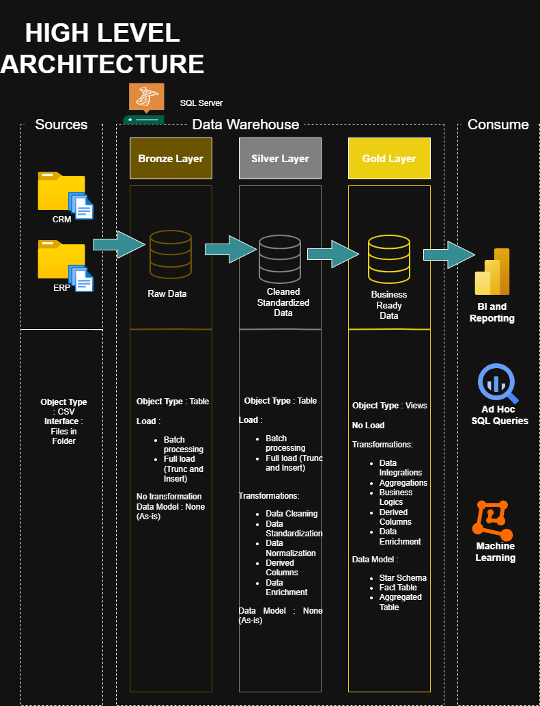
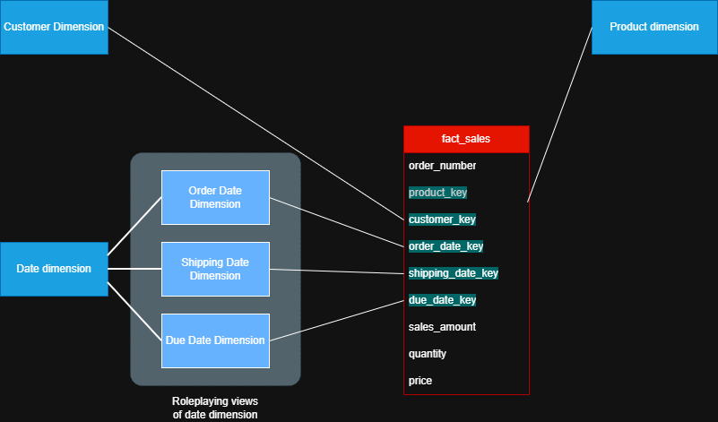
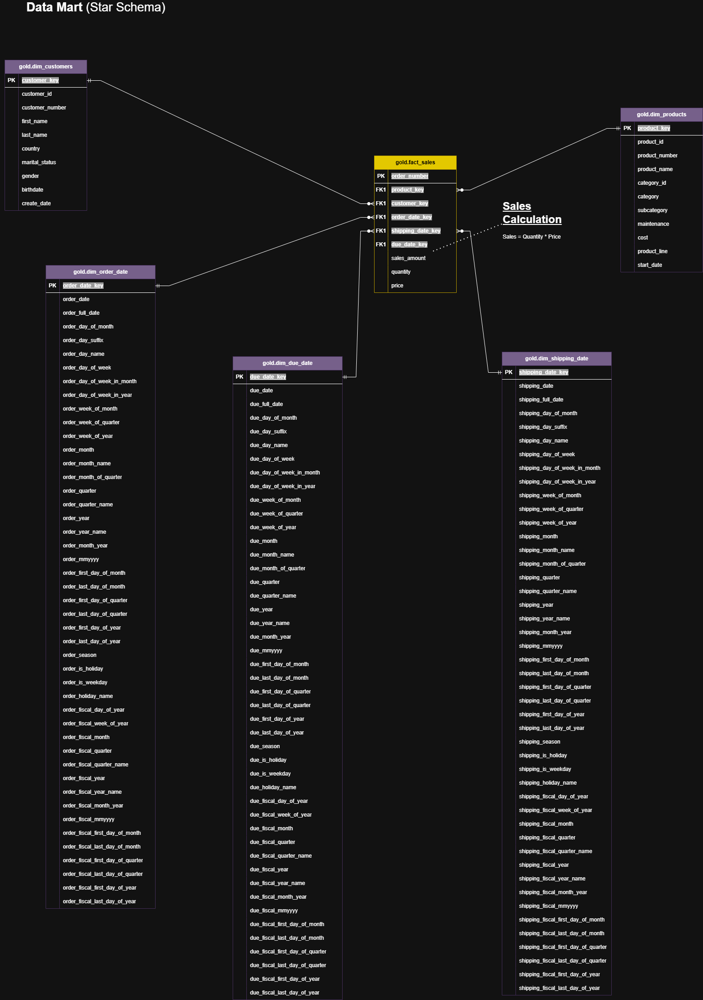
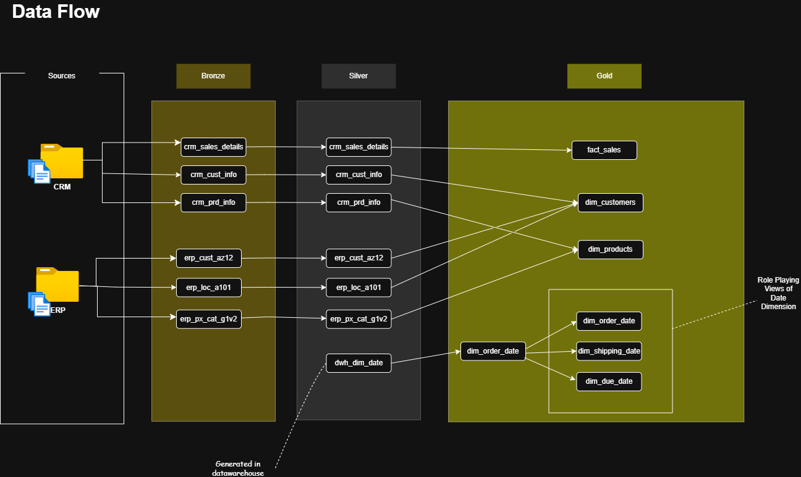
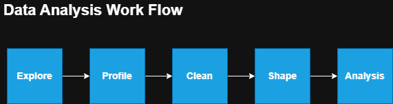
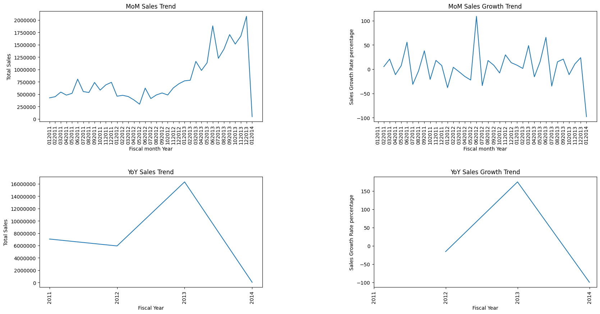
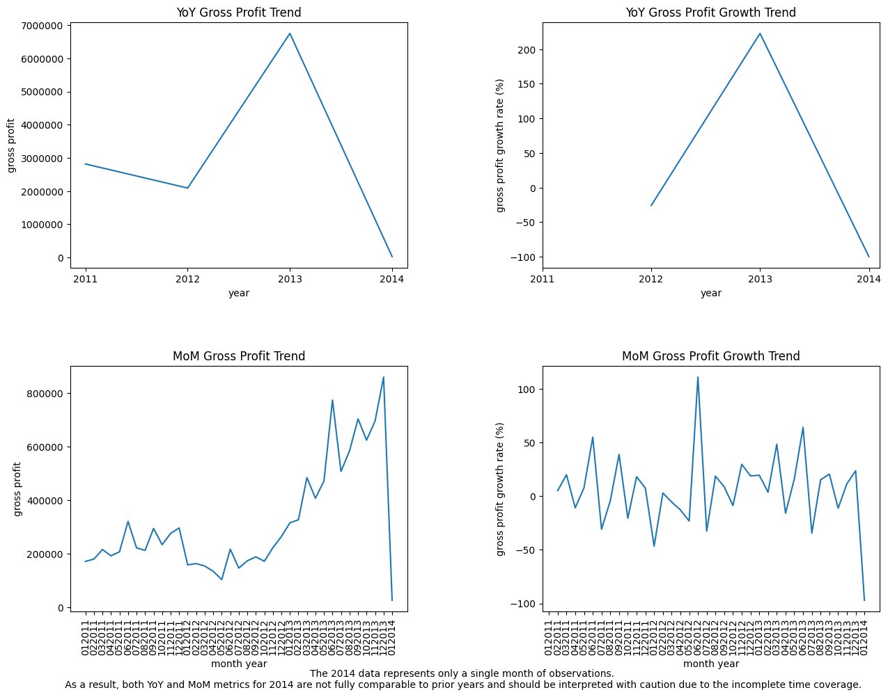
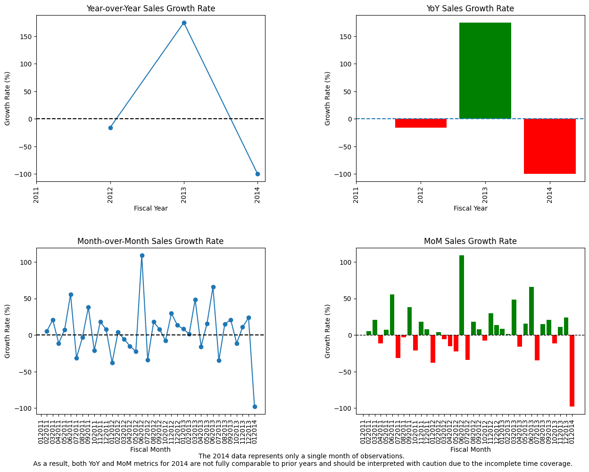
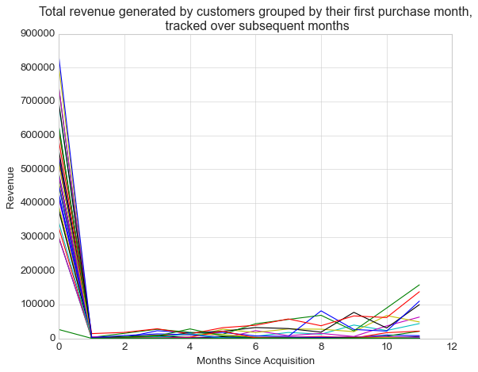
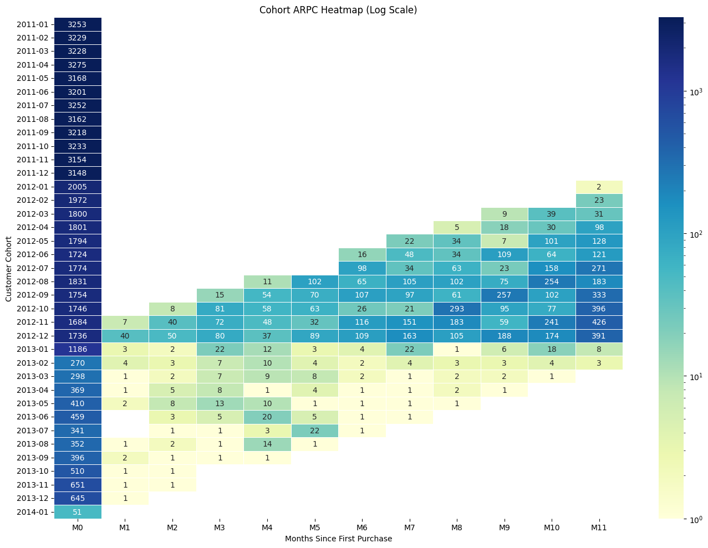

Modern Retail & Order Management Data Warehouse
An end-to-end retail analytics solution built with SQL Server, dimensional modeling, Medallion Architecture, SQL analysis, and Power BI. The project integrates CRM and ERP data to support sales performance, customer behavior, product analysis, profitability, and order lifecycle reporting across multiple international markets.
Project Overview
This project builds an analytics-ready data warehouse for a retail business selling bicycles, sports clothing, and related components across Canada, the United States, the United Kingdom, Germany, France, and Australia.
Operational data from CRM and ERP systems is integrated through a Bronze → Silver → Gold Medallion Architecture and transformed into a Kimball-style Star Schema. The Gold layer provides a consistent analytical foundation for SQL analysis and Power BI reporting.
The analytical workflow focuses on four key business questions:
- How are revenue and profitability changing over time?
- Which products, categories, and markets drive performance?
- What seasonal patterns exist in sales and profit?
- How does customer revenue evolve after the first purchase?
Stage 1: Data Warehouse Creation
The warehouse was designed using a layered Medallion Architecture to separate raw ingestion, data preparation, and business-ready analytical structures.
Bronze Layer
Raw CRM and ERP data ingested without business transformations, preserving source fidelity and traceability.
Silver Layer
Data standardized, cleansed, deduplicated, and conformed across source systems for consistent downstream analysis.
Gold Layer
Business-ready fact and dimension tables organized into a Star Schema for analytical workloads and BI reporting.
Dimensional Model
The central fact_sales table is defined at the order-line grain:
One row represents one product purchased by one customer within a single order.
The analytical model contains:
- fact_sales — revenue, quantity, unit price, and transactional keys
- dim_customer — customer attributes and demographics
- dim_product — product, category, and subcategory hierarchy
- dim_date — shared calendar dimension
- dim_order_date — role-playing date view
- dim_shipping_date — role-playing date view
- dim_due_date — role-playing date view
Additive measures such as sales_amount and quantity can be aggregated across dimensions, while unit_price is retained at transaction grain for average selling price and historical pricing analysis rather than summed.




Data Quality & Validation
Before analysis, the analytical layer was validated to ensure that the warehouse produced reliable and consistent results.
- Validated fact-table grain and order-line uniqueness
- Checked referential integrity between fact and dimension tables
- Validated surrogate-key mappings
- Identified and handled null values in analytical fields
- Standardized unknown or missing foreign keys using an Unknown dimension member
- Cross-validated integrated CRM and ERP attributes
- Reviewed distributions of revenue and quantity measures
These checks helped prevent broken joins, duplicate counting, and inconsistent aggregations during downstream analysis and BI reporting.
Stage 2: SQL-Based Data Analysis
SQL was used beyond basic querying to validate the warehouse, investigate customer behavior, calculate business metrics, and identify trends.
The analytical workflow followed: Explore → Profile → Clean → Shape → Analyze.

Revenue & Profitability Analysis
Revenue and gross profit were analyzed across time, product categories, and markets. Gross profit was calculated as:
Gross Profit = Sales Revenue − Product Cost


Seasonality
Revenue and gross profit exhibit recurring seasonal patterns, with performance strengthening toward the end of the year and reaching a high point in December. A smaller and less consistent uplift is also visible around June.
The recurring year-end pattern suggests an opportunity to investigate the contribution of holiday demand, promotions, product mix, and other seasonal factors. The sharp decline at the beginning of 2014 is associated with incomplete data and was therefore excluded from interpretation as a genuine performance decline.

Stage 3: Customer Cohort Analysis
Cohort analysis was used to understand how customer value changes after acquisition. Customers were grouped according to their first purchase month, and subsequent purchasing activity was tracked using lifecycle months.
Metrics Analyzed
- Total revenue per acquisition cohort
- Average Revenue per Customer (ARPC)
- Revenue contribution from repeat purchases
- Cumulative customer revenue over the observed lifecycle
Key Findings
- Customer revenue is heavily front-loaded. The first purchase month contributes the largest share of observed cohort revenue.
- Repeat-purchase contribution is comparatively smaller. Post-acquisition revenue is lower and varies across cohorts.
- Later cohorts show relatively greater contribution from repeat purchases, while acquisition-month ARPC declines across cohorts.
- Cohort performance is not uniform, indicating differences in customer value and purchasing behavior across acquisition periods.
These findings suggest that customer acquisition and post-acquisition monetization should be evaluated together rather than relying solely on first-purchase revenue. Further analysis could investigate whether changes in product mix, customer geography, pricing, or acquisition channels explain differences between cohorts.


Stage 4: Power BI Reporting
The Gold-layer Star Schema was connected to Power BI to provide an interactive analytical layer for business users.
- Revenue and profitability KPIs
- Sales trend and seasonality analysis
- Customer and cohort analysis
- Product and category performance
- Regional and country-level comparisons
- Interactive filtering and drill-down analysis
The model is designed so that Power BI users can explore business performance without rebuilding transformation logic or complex source-system relationships.
Key Business Insights
Strong Q4 Seasonality
Revenue and gross profit strengthen toward year-end, with December consistently showing strong performance.
Front-Loaded Customer Value
The majority of observed cohort revenue is generated during the initial purchase period.
Repeat Purchase Opportunity
Later customer cohorts show greater relative contribution from repeat purchases, creating an opportunity to investigate retention and post-acquisition monetization.
Tools & Important Links
- SQL Server, SSMS, Python, Power BI
- Project Datasets (CSV)
- SQL Server Express
- SSMS
- Draw.io
- View Full Project on GitHub